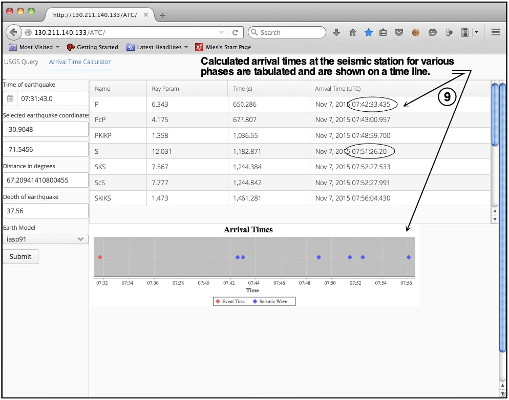
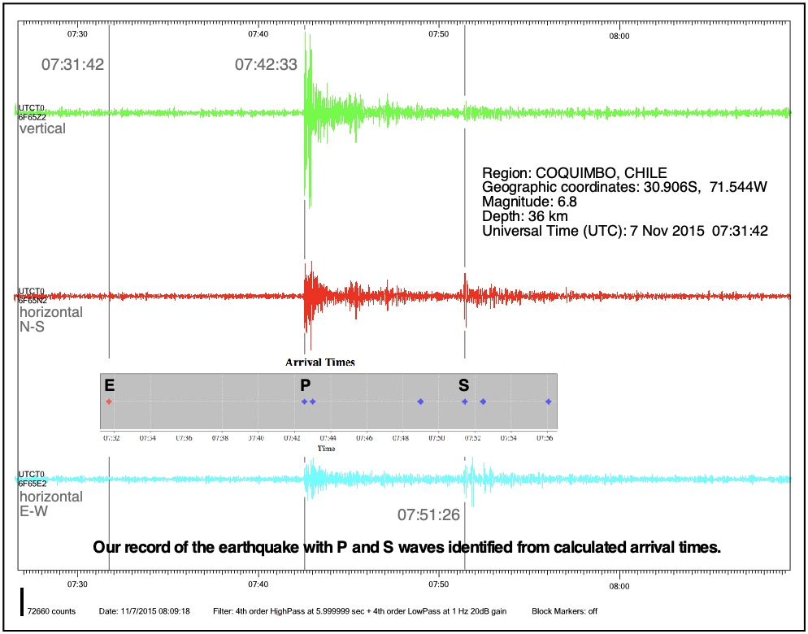

Our seismic arrival-time calculator is a web app
that calculates arrival times of seismic signals at a seismic
station based on The TauP Toolkit (Crotwell et al., 1999,
Seismological Research Letters, 70, 154-160).
The web app was developed in 2016 by UTC Computer Science
students, Jacob Coleman, Austin Harris, and
Jin Cho.
Take a moment to review the 9 steps illustrated below before
launching the arrival-time calculator.
Launch
calculator




Launch
calculator